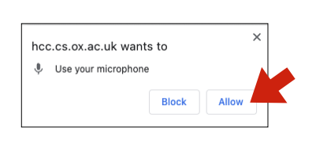
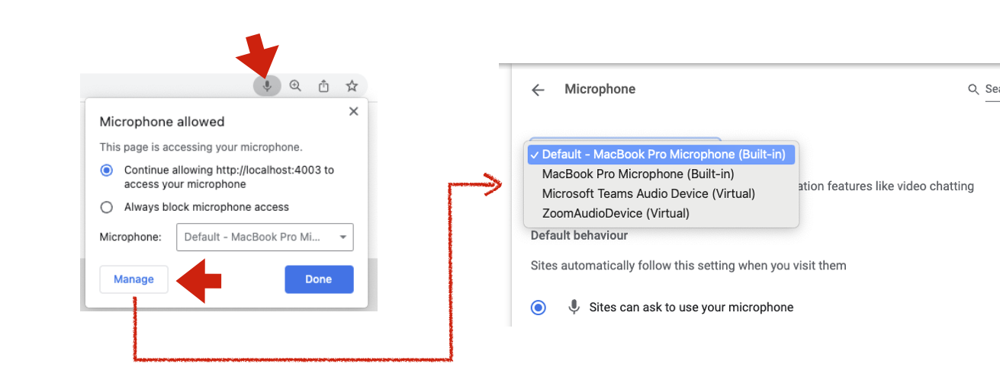

SAoIP Voice Calibration
Instructions
Hello! In this phase, we are going to have you record your voice as you read a
collection of sentences. We will then have you upload the recording to a
folder provided to you in an email, which we will use to calibrate the AI model.
To get started, do please follow these simple steps:
- Use Chrome--Please use Chrome to access this website if you can. This will make sure
the recording app works as intended.
- Find a quiet environment - Try to find a quiet place that you can speak
at your normal voice, such as your room. Try to eliminate background noise if you can,
and avoid places without wind. For instance, try closing the window.
-
Set up your headset/microphone--Please plug in and turn on your gaming
headset or microphone and test it out on your computer to make sure the volume
levels are good, and that it is set to your preferred system input.
Avoid bluetooth:--Please try to use a wired/built-in USB microphone or headset instead of a Bluetooth one,
as bluetooth headsets tend to record audio in lower quality which can confuse the system.
Beware of echo--Try to use as close as possible to your microphone as possible. Especially if you are using
a built-in laptop mic, speak directly into your laptop. Otherwise you will pick up lots of echo.
- Make a test recording--Hit the red Record button below. Chrome will ask you for permission to use your microphone.
Click on "Allow" on the popup box.

Speak one or two sentences, stop the recording and listen to the recorded result.
Adjust your microphone so that your voice is clear.
-
Check your audio device--If your audio sounded muffled, the wrong audio device might be selected.
Click the little microphone icon in the right side of your URL bar. Then, select the Manage devices setting,
then make sure your preferred microphone is selected.

- Make your main recording - Hit Record once again. Read all the sentences one after another without a pause. One you are done, hit Stop, and listen to the result. If it sounds clear, click the wav file link under the audio player that popped up. This will save the file to your computer. Upload this file to the folder provided to you in the e-mail we sent.
Hit Record below, then read the following sentences using your normal voice, one after another without a break.
If you make a mistake, hit stop, and start over. If you find it hard making a single recording with all the sentences,
you can take a few sentences as a time in separate recordings, but make sure to upload them all at the end!
- Enough money was available for him to begin his business.
- Do you have a table in front of the fireplace?
- You shouldn't run around with a toothbrush in your mouth.
- He was surprised that his immense laziness was inspirational to others.
- The policeman went over the room in search for evidence.
- You don't have to work so hard if you're tired.
- Red tulips and blue violets are my favourite flowers.
- In one year, there are more than thirty-one million seconds.
- I think she's on our side, but I'm not sure.
- Next to him, I'm the fastest runner in our class.
- My sister is clumsy, which is a disadvantage to her.
- I will have lived here for ten years next month.
- Mary took a picture and sent it to her friend.
- I have little money. However, I feel happy with you.
- Tom has what it takes to be a good teacher.
- I'm starting to wonder if this was a good idea.
- The only access to the farmhouse is across the fields.
- Tom can speak French almost as well as Mary can.
- I can tell you've gone to a lot of trouble.
- We don't need to do everything on the list.
- Could you keep an eye out for the postman? Thank you.
- The light suddenly turned yellow.
- You people go ahead. We'll bring up the rear.
- She is always curious about what I am doing.
- I have no idea where Tom and Mary are. Where did they go?
- He was profuse in his praise of his teacher.
- He's been working as a diplomat for many years at this point.
- The Prime Minister is to make a statement tomorrow.
- I didn't know that Tom was going skiing with you.
- As he entered the church, he could hear the soft voice of someone whispering into a cell phone.
- He knew it was going to be a bad day when he saw mountain lions roaming the streets.
- The two walked down the slot canyon oblivious to the sound of thunder in the distance.
- Car safety systems have come a long way, but he was out to prove they could be outsmarted.
- If I don’t like something, I’ll stay away from it.
- I hate being pressed on uncomfortable questions.
- The delicious aroma from the kitchen was ruined by cigarette smoke.
- I like to leave work after my eight-hour tea-break.
- Robots hate it when you push their buttons.
- It took him a while to realize that everything he decided not to change he was actually choosing.
Now, hit Stop below! Listen to your recording. Does it sound clear and loud? If not, please adjust
your audio levels and try again. If it sounds spiffing, download the file and upload it to the folder
specified in the email you've received.
Questions? Email us at hcc-voice-study@cs.ox.ac.uk.